<<< 返回［配置详解］索引
< CentOS 4.4 的下载、安装 > （最近更新日：2007/03/18）
CentOS 是当前最流行的商业版 Linux -- Red Hat Enterprise Linux（RHEL）的克隆版。它和 RHEL 的区别除了没有 RHEL 一样的技术支持以外，就是修正了 RHEL 已知的一些 Bug，所以，其稳定性值得我们信赖。至于 RHEL 的技术支持，在一般公司采购的情况下，大多是为了安心或者在问题出现的时候能够找到负责方才购买 Red Hat 的技术支持。事实上，为了能够享受技术支持而付费的公司，真正确实的享受了技术支持服务的情况并没有想象的那么多。因为对 Linux 相关技术的掌握程度只要相当于 LPIC Level 1 级别的用户就基本能够驾驭它。所以，对于我们个人，根据用途的不同，不需要技术支持，也完全有能力活用这个系统。
对于安装，我们的原则就是在初期按装时采用最小安装，这样使得初期状态显得干净而简洁。在此前提下，保证系统中具备最基本的开发环境，以便能够安装一些需要编译的组件。在以后的配置中，需要哪些组件的时候，再通过CentOS的“yum”命令（前提需要首先接入互联网）来在线安装。
[第一步] 从镜像站点上下载ISO的镜像文件
CD 1 : http://mirror.tini4u.net/centos/4.4/isos/i386/CentOS-4.4-i386-bin1of4.iso
CD 2 : http://mirror.tini4u.net/centos/4.4/isos/i386/CentOS-4.4-i386-bin2of4.iso
CD 3 : http://mirror.tini4u.net/centos/4.4/isos/i386/CentOS-4.4-i386-bin3of4.iso
CD 4 : http://mirror.tini4u.net/centos/4.4/isos/i386/CentOS-4.4-i386-bin4of4.iso
md5校验码：http://mirror.tini4u.net/centos/4.4/isos/i386/md5sum
将上面所有文件（包括md5校验码）下载到同一个目录（文件夹）下。（这里，选择了从CentOS的韩国镜像站上下载。根据具体位置可以选择距离近、速度快的景象站点。查找CentOS的镜像请见官方镜像站点列表。）
[第二步] 验证下载的ISO镜像文件的完整性
下载 md5校验工具 ，并将其放在和刚刚下载的CentOS的ISO镜像文件所在的目录里。
然后启动Windows下的命令行（cmd.exe）,完成如下步骤：
C:\Documents and Settings\XXXX> e: ← 进入镜像文件所在分区
E:\> cd CentOS ← 进入镜像文件所在目录
E:\CentOS> md5sum -c md5sum ← 回车，执行md5sum进行完整性校验
CentOS-4.4-i386-bin1of4.iso: OK －\
CentOS-4.4-i386-bin2of4.iso: OK － 四个镜像文件全部显示OK，
CentOS-4.4-i386-bin3of4.iso: OK － 说明下载的ISO镜像文件没有问题！
CentOS-4.4-i386-bin4of4.iso: OK －/
md5sum: CentOS-4.4-i386-binDVD.iso: No such file or directory －\
CentOS-4.4-i386-binDVD.iso: FAILED open or read － 无视这些信息
md5sum: WARNING: 1 of 5 listed files could not be read －/ |
[第三步] 将ISO镜像文件制作成CentOS安装CD
在Microsoft Windows下，用Nero等等的光盘刻录软件将ISO镜像文件转换、刻录成安装CD。
将BIOS设置中的启动项设置为从光盘启动，然后放入CentOS安装CD的第一张后，重新启动计算机。
安装程序启动后的安装与设置步骤如下：
[1] 光盘启动，出现“boot:”提示符，直接按回车进入图形安装界面。
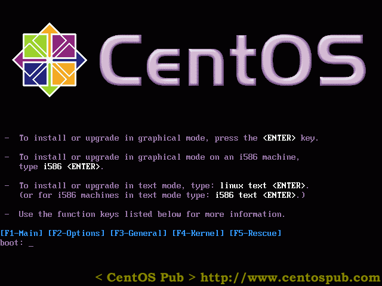
[2] 出现是否对CD媒体进行测试的提问，这里选择“Skip”跳过测试。
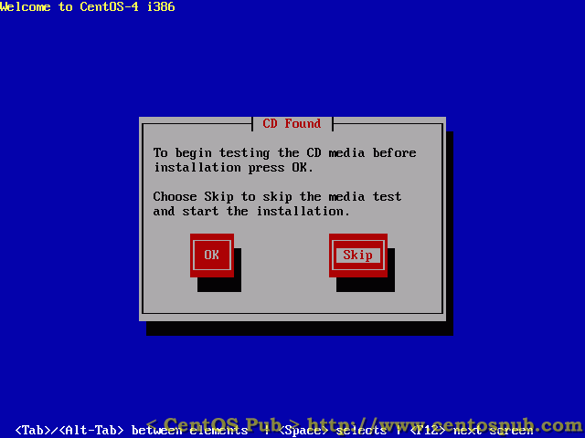
[3] 图形安装模式启动，点击“Next”。
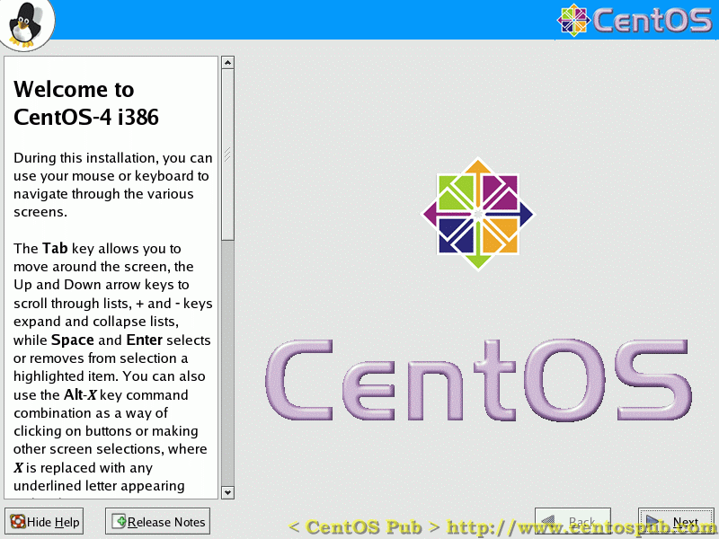
[4] 语言选择，这里不用中文，而用默认的英文。
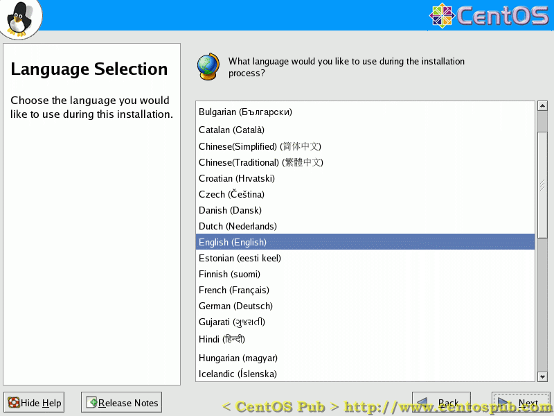
[5] 选择键盘布局模式，这里根据自己具体的情况来选择。中国大陆一般为“U.S.English”。
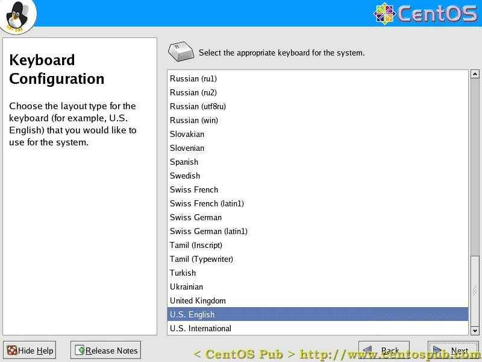
[6] 安装类型选择，这里选择“Server”（服务器）进行服务器安装。
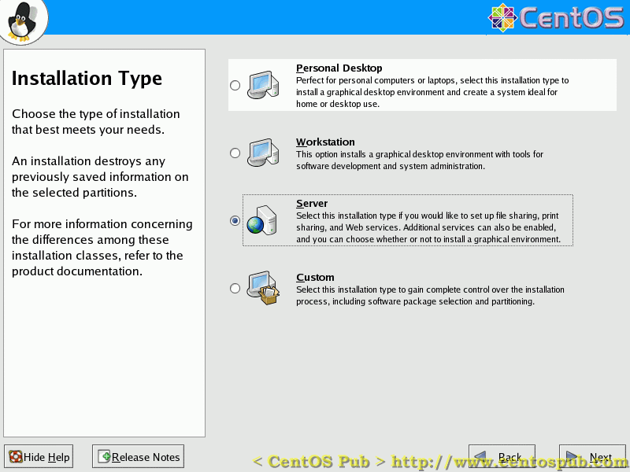
[7] 硬盘分区设置，这里选择“Automatically Partition”进行自动分区。
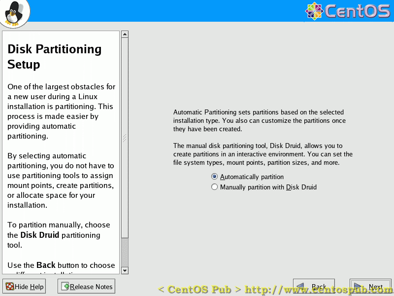
[8] 选择自动分区模式，这里选择“Remove all partitions on this system”来删除硬盘上所有的分区。
请确认硬盘上的确没有重要的数据在上面，否则请事前做好数据备份。
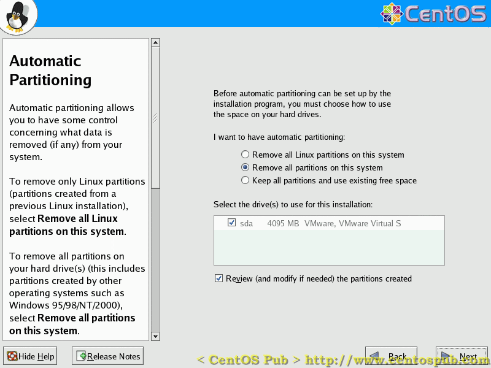
[9] 硬盘分区设置的确认，这里点击“Yes”。
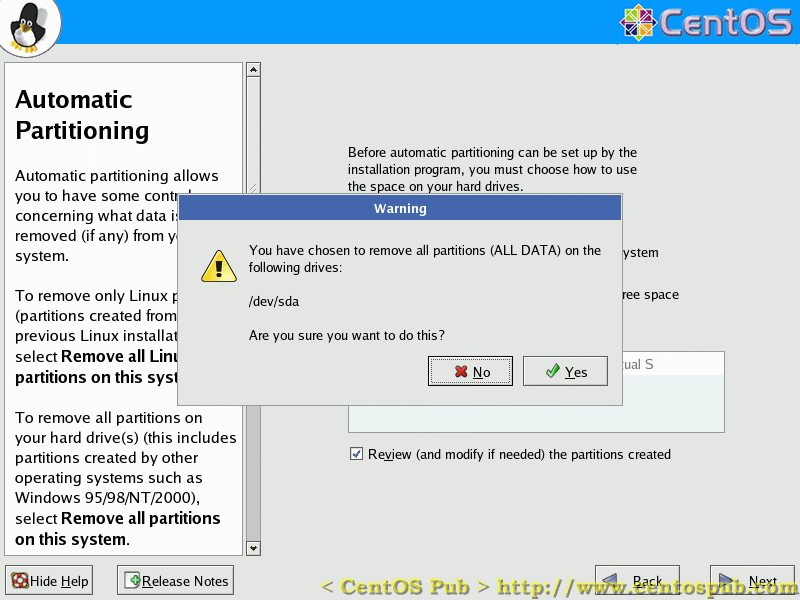
[10] 硬盘分区后的分割状态，在此可以了解安装后硬盘的分割状态。点击“Next”进入下一步。
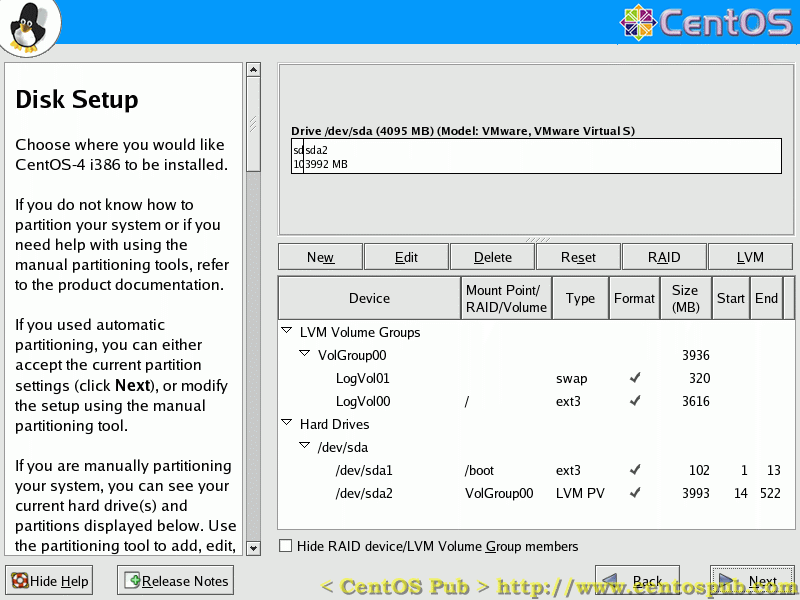
[11] 引导程序的配置，这里全部保持默认设置，点击“Next进入下一步”。
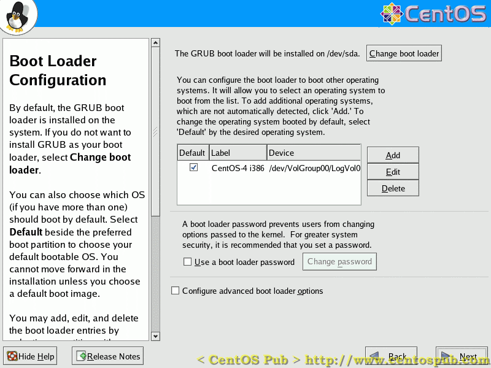
[12] 网络配置，这里需要根据自己的实际情况来配置。特别，eth0的IP地址不能够与局域网中其他计算机的IP地址重复。
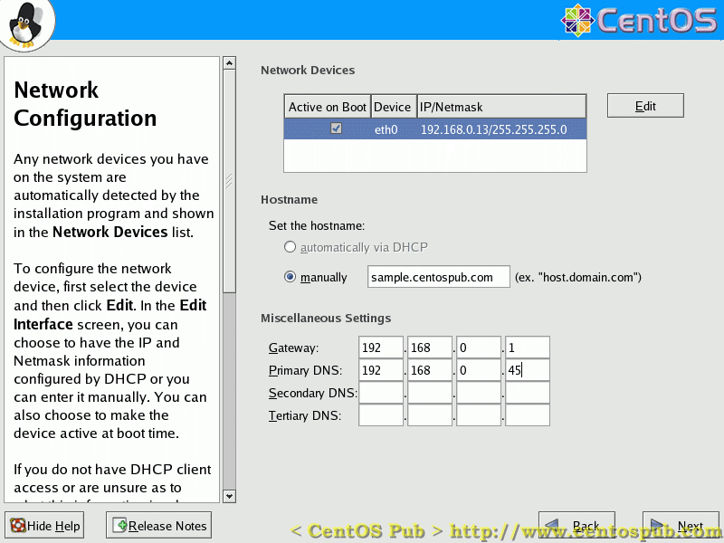
[13] 防火墙与SELinux的配置，这里防火墙要选择启动的状态，然后给窗口中各个服务的复选项打勾，接受这些服务的连接。
SELinux选择“Warn”（警告）。
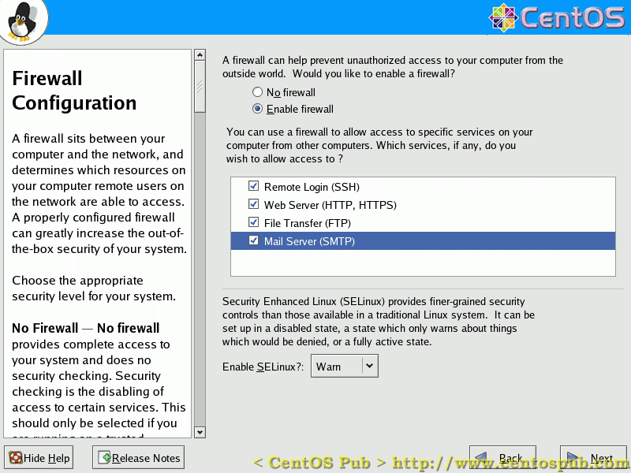
[14] 语言设置，在默认“English(USA)”被安装的基础上，找到简体中文、繁体中文等等的复选项，将它们打勾安装到系统中。但在这里为了省去解决CUI下文字显示方面的繁琐，默认语言选择“English(USA)”。
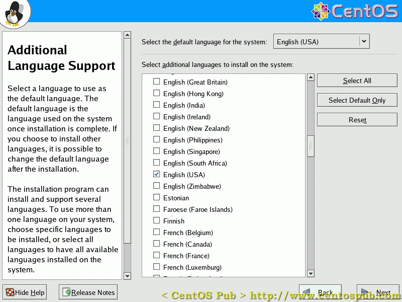
[15] 时区设定，这里根据自己所在的时区选择相应的城市。
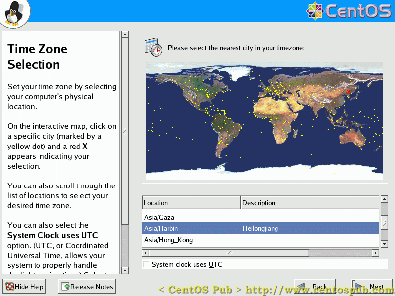
[16] root密码设置。root作为系统的全权拥有者，对系统有百分之一百的修改与访问权，所以这个密码建议设置的比较复杂一些，最好包括数字、大写英文字母、小写英文字母，以及符号的混合。
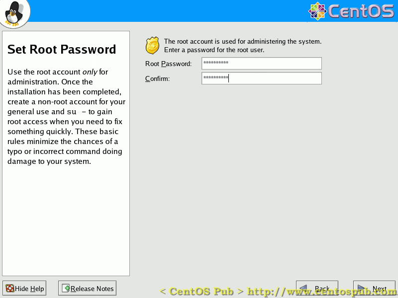
[17] 软件包选择，这里为了精简系统的目的，把所有默认的复选项的勾全部去掉，然后只选择“Development Tools”（开发工具）一项。
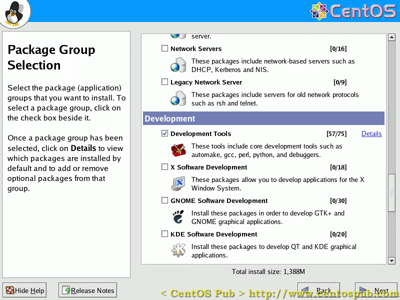
[18] 安装前最后确认，在前面的配置准确无误后，点击“Next”开始安装。

[19] 提示安装时需要的CD，实质上，当前的配置情况只需要安装盘的1-3即可完成安装。点击“Continue”开始安装。
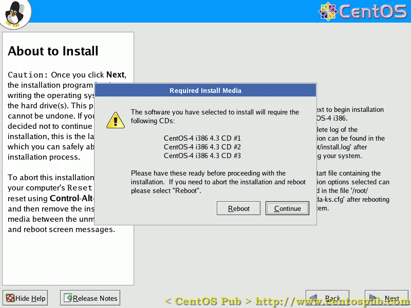
[20] 安装开始，等待……中途会有要求放入相应CD，继续安装的提示。数分后，安装完毕，出现安装成功的提示。点击“Reboot”重新启动计算机。
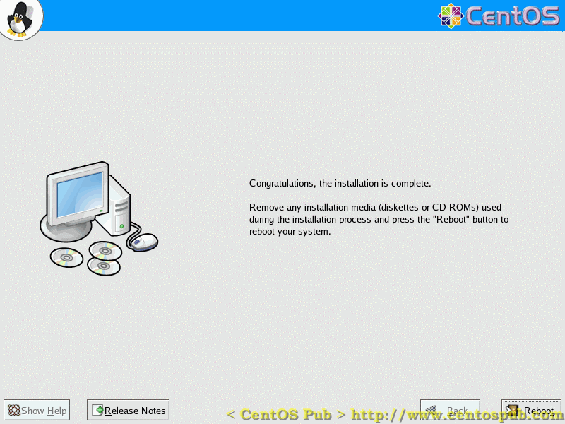
至此，系统安装结束。